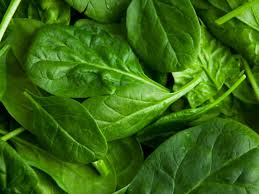

4 pancakes (364 calories)
 2 tbsp of maple syrup (104 calories)
2 tbsp of maple syrup (104 calories)
1 sundae (379 calories)
 1 glass of milk (125 calories)
1 glass of milk (125 calories)
5 tuna cakes (900 calories) 
 10 stalks of asparagus (34 calories)
10 stalks of asparagus (34 calories)
1 lemon (24 calories)
1 ear medium corn (99 calories)
4 cups of Sinigang na Pompano (548 calories)
 1 cup of white rice (205 calories)
1 cup of white rice (205 calories)
4 cups of spinach (164 calories)